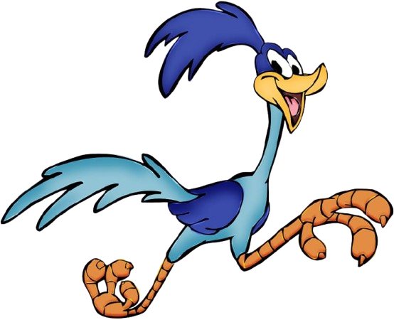
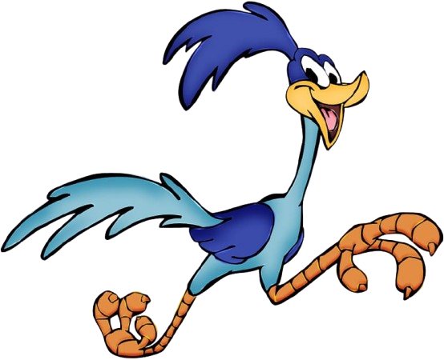

EASE
Transició suau
Exemples de transition-timing-function.
Transició suau
Lenta al principi i al final
Velocitat constant
Descobreix qui hi ha a la casa. (La imatge gira quan el cursor està a sobre)

Un estudiant de programació
La imatge passa de desaturada a completa quan hi passes el cursor per sobre.